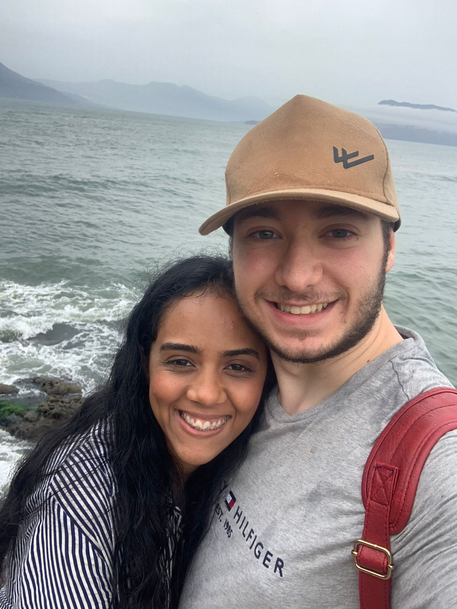
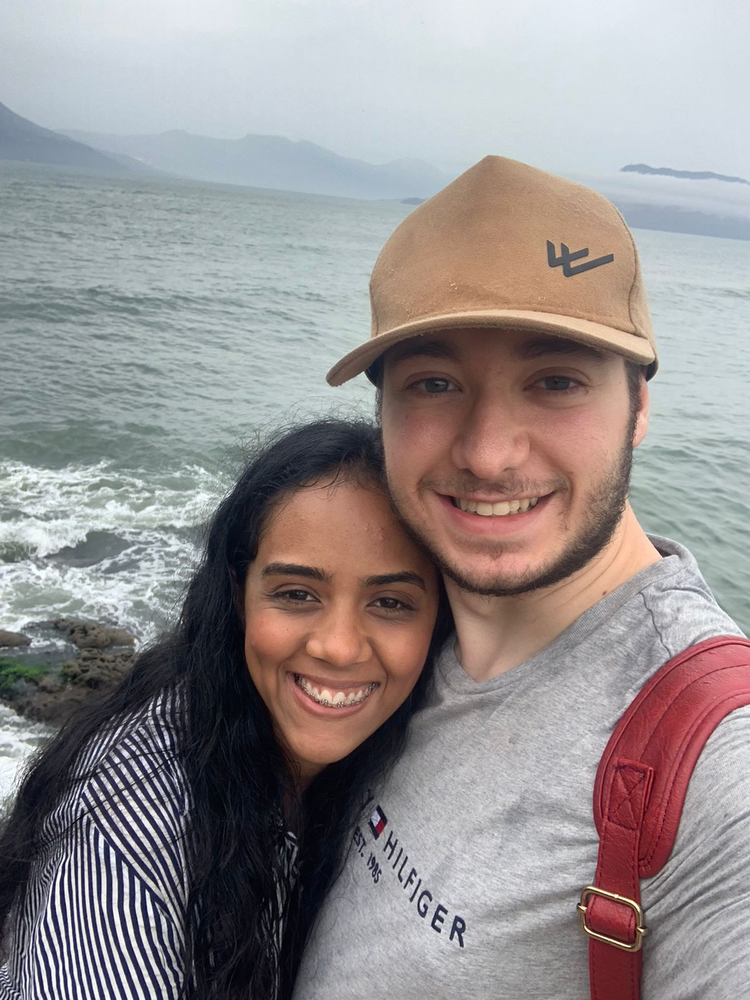
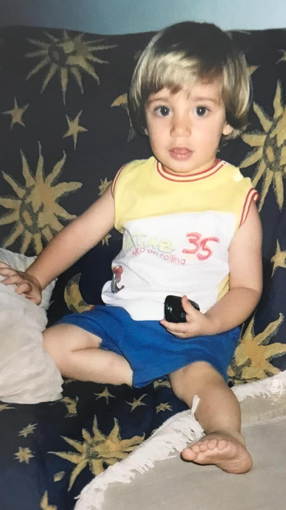
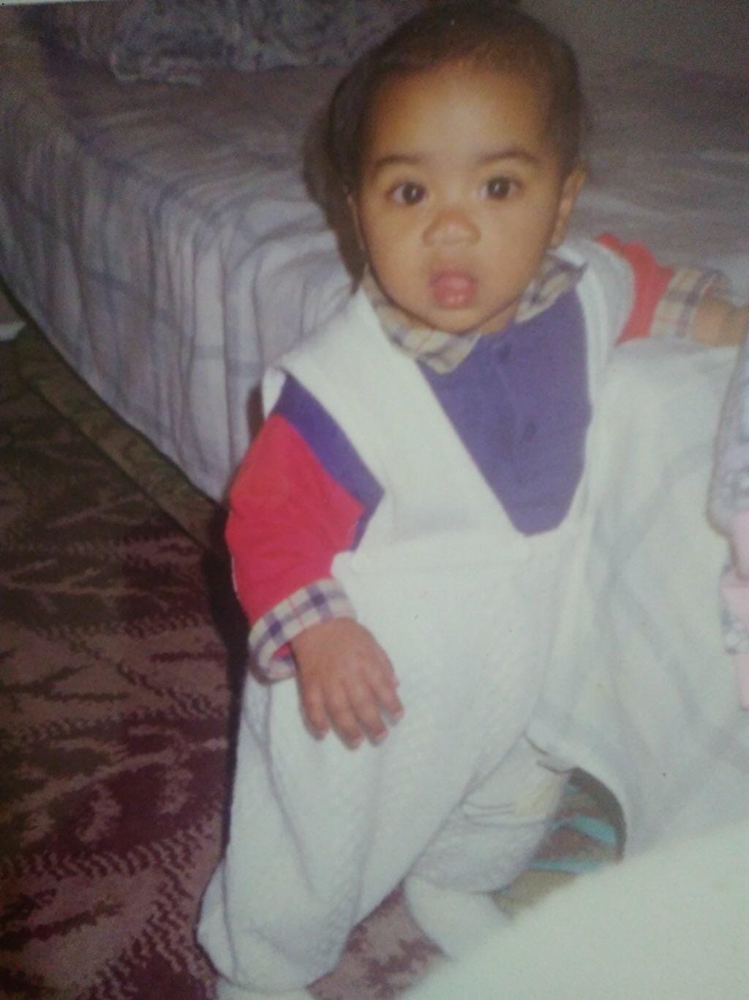
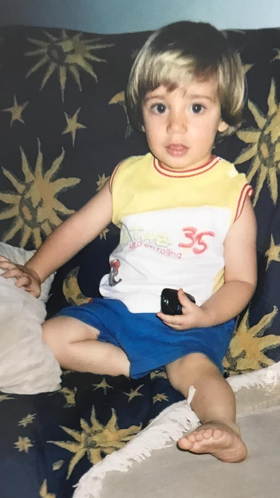
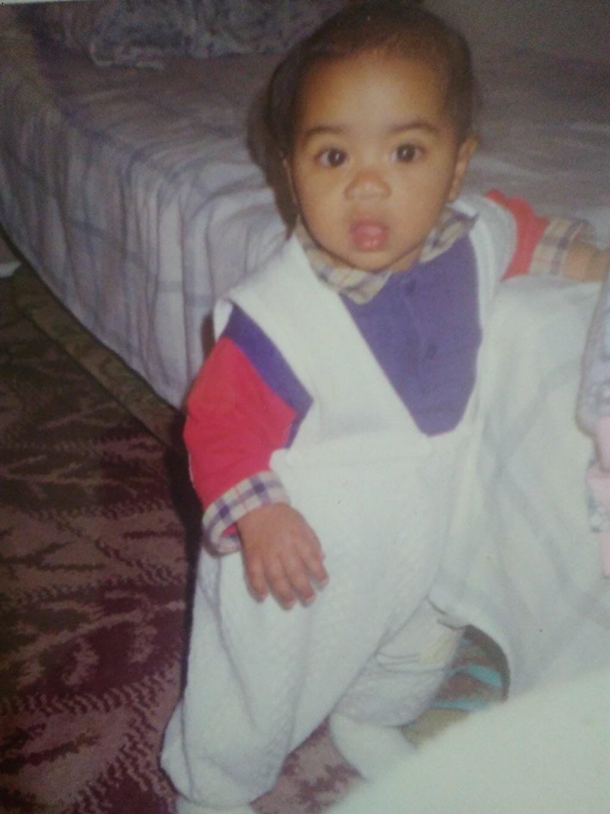

Nossa História
No dia 26 de junho de 2024, visitei a imponente subsede do Sindicato Sinthoresp em Guarulhos. A imensidão do lugar, com seu ambiente profissional e organizado, contrastava com a sensação de algo especial que pairava no ar. Ao subir até o segundo andar, fui gentilmente recepcionado e me apresentei a todos, cumprimentando-os com um sorriso. Mas, no meio daquela movimentação, havia algo que imediatamente chamou minha atenção: ela. Mariana Rufino, com seu jeito tranquilo e sereno, parecia estar em um mundo à parte. Com educação, pedi licença para usar o computador dela. Cada movimento meu parecia mais carregado de uma alegria silenciosa, enquanto ela, imersa em sua rotina, não parecia perceber o quanto estava me fazendo sorrir por dentro. Mesmo assim, algo no fundo do meu peito me dizia que esse encontro estava destinado a ser memorável. Fiz o que precisava ser feito, mas, ao olhar para ela, percebi que, por mais que ela não tivesse notado, aquele simples momento compartilhado já estava me deixando genuinamente feliz. Mais tarde, ao sair da subsede, passei novamente por onde ela estava. Mariana, com seu sorriso tímido e sereno, estava na portaria, como sempre, cumprindo com seu trabalho. Fui até ela para me despedir, como de costume, e desejei um ótimo trabalho. Mas, naquele instante, algo parecia diferente. Ela me olhou com uma atenção mais profunda, e pela primeira vez, seu sorriso discreto revelou uma conexão silenciosa entre nós. A despedida que antes era apenas uma formalidade agora se tornava algo mais significativo. Foi quando eu disse, com leveza: "Quando o mel é bom, a abelha sempre volta." Mariana respondeu com um sorriso ainda mais doce, e naquele momento, algo me dizia que ela também sentia a mesma conexão. De repente, aquele simples gesto de despedida se transformou em uma promessa silenciosa de que, em algum momento, nossos caminhos se cruzariam novamente.
Galeria de Momentos


 

 




Momentos Especiais
Passeio à luz das estrelas no Bosque Maia
Um momento mágico sob as estrelas...
Observatório de Astronomia do Ibirapuera
Uma noite de descobertas e vistas incríveis do céu.
Uber ao som de "My Only One"
Uma viagem romântica de carro, com a música que marcou nosso momento.
O primeiro "Eu te amo" no Parque Bosque Maia
Um momento emocional e inesquecível ao lado de quem amo.
O primeiro beijo no cinema
Enquanto assistíamos ao filme "É Assim Que Acaba".
O lindo momento em que comprei a aliança de namoro
O símbolo do nosso compromisso e amor eterno.
A primeira carta de amor
Palavras escritas com o coração, que ficaram marcadas na memória.
A fina garoa da Avenida Paulista em frente ao shopping
Uma tarde chuvosa que deixou nosso passeio ainda mais romântico.
Passeio noturno romântico na orla da praia Porto Novo em Caraguatatuba
O som das ondas e o brilho da lua fizeram esse momento ainda mais especial.
Caminhada no bairro da Liberdade com as lâmpadas japonesas iluminando toda a calçada
Uma caminhada mágica, com uma atmosfera encantadora e cultural.